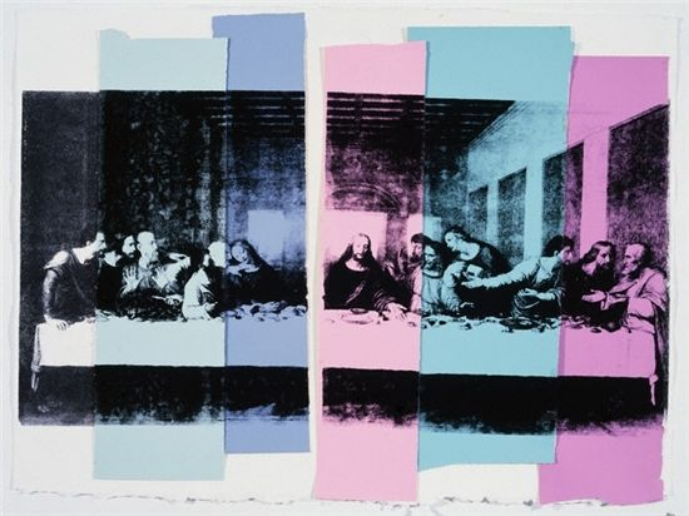

인터뷰
이 인터뷰는 1977년 6월 브로드웨이 860번지에 있는 세 번째 공장에서 진행되었습니다. 인터뷰에는 90분이 걸렸습니다.
즉, 전체 테이프 한 장의 시간이었습니다. 몇 가지 질문에 대해 생각을 해보았으나 대부분 즉흥적으로 면접이 진행되었습니다.

폴 테일러(Paul Taylor): 당신은 올해 밀라노에서 최후의 만찬 그림을 전시할 예정입니다.
앤디 워홀: 그렇죠.
폴 테일러: 그림은 언제 만들었나요?
앤디 워홀: 저는 일년 내내 작업을 했어요. 원래는 12월, 그다음 1월에 상영될 예정이었습니다. 이제 언제인지 모르겠습니다.
폴 테일러: 그림이 그려져 있나요?
앤디 워홀: 모르겠어요. 일부는 칠해져 있지만 칠해진 부분은 표시되지 않습니다. 우리는 실크 스크린을 사용합니다.
폴 테일러: 최후의 만찬은 왜 했나요?
앤디 워홀: 알렉산더 이올라스가 나에게 최후의 만찬을 해달라고 부탁했기 때문이죠. 그는 또 다른 최후의 만찬 앞에 갤러리를 마련하고 서너 명에게 최후의 만찬을 해달라고 부탁했습니다.
폴 테일러: 최후의 만찬 주제가 당신에게 특별한 의미가 있나요?
앤디 워홀: 아니요. 좋은 그림이에요.